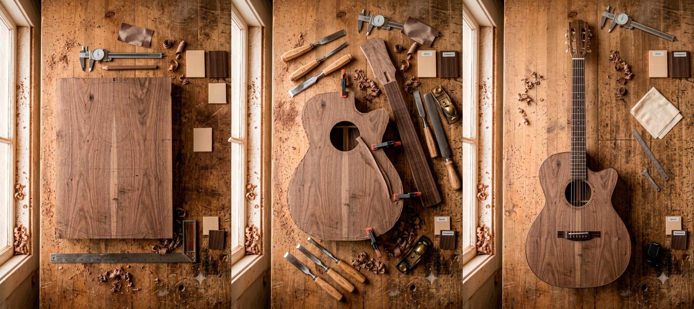
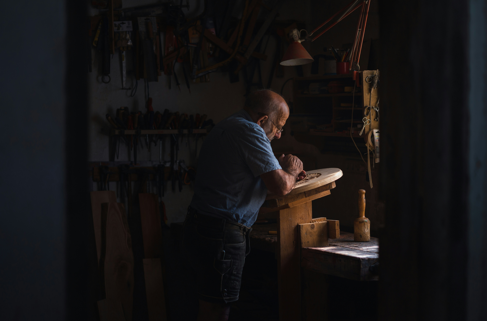
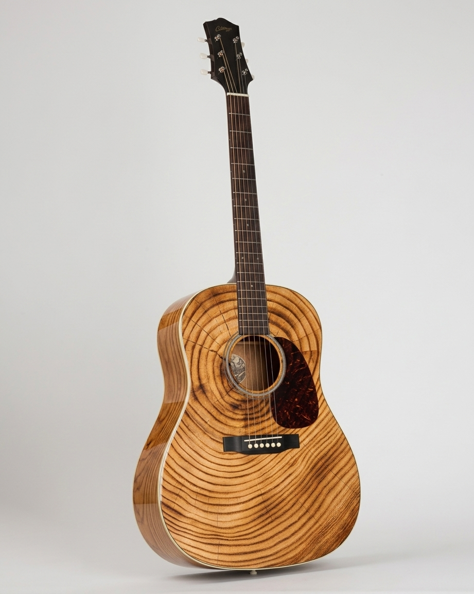
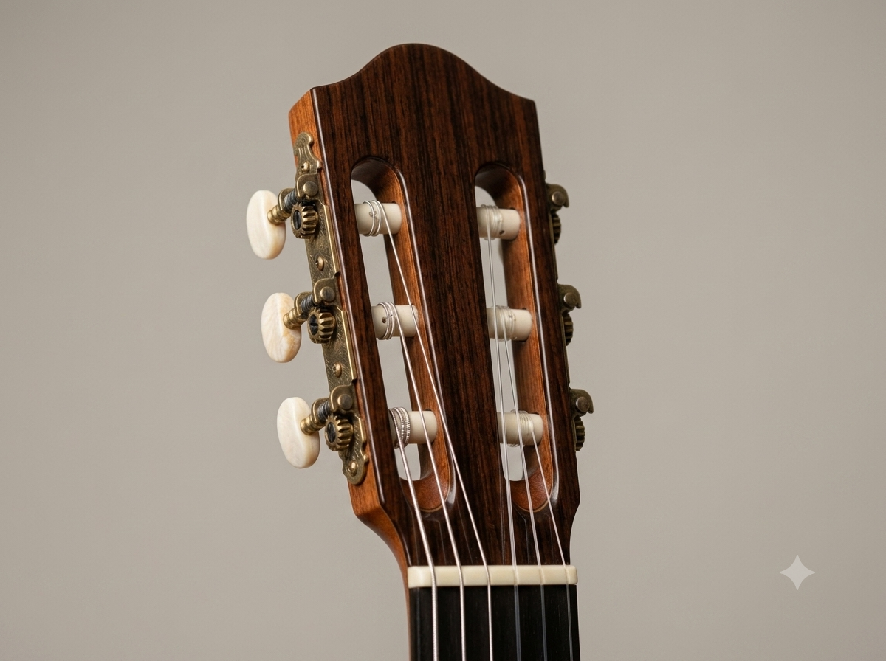

01
Materia
Selección y preparación
Todo comienza con una pieza de madera y la lectura de su veta.
Presencial · CABA · Nivel intermedio
Diseñá y construí una guitarra desde cero, desde la selección de maderas hasta la calibración final.
Cupos reducidos. Trabajo personalizado en taller.
El resultado
Desde la selección de la madera hasta la primera calibración, cada etapa transforma la materia en un instrumento irrepetible.

Selección y preparación
Todo comienza con una pieza de madera y la lectura de su veta.
Corte, talla y ensamblado
Cada curva se define a mano, según el diseño y la ergonomía.
Acabado y calibración
El proceso termina cuando el instrumento encuentra su propia voz.
Materia
Todo comienza con una pieza de madera y la lectura de su veta.
Forma
Cada curva se define a mano, según el diseño y la ergonomía.
Identidad
El proceso termina cuando el instrumento encuentra su propia voz.
El proceso
Definición del instrumento, referencias, ergonomía, estilo y objetivos sonoros.
Elección de maderas, componentes y combinaciones según respuesta, estabilidad y carácter visual.
Trazado, corte, rebaje, encolado y conformación general de la pieza.
Construcción del mástil, diapasón, escala, perfil y unión con el cuerpo.
Instalación, conexión, ajuste de acción, octavación y puesta a punto.
Lijado final, terminación, pulido, montaje y evaluación completa del instrumento.

Proceso de construcción
Tu instrumento
Explorá algunas de las elecciones que vas a trabajar durante el programa.


Configuración actual
El oficio
No se trata solamente de terminar una guitarra. Se trata de comprender tus decisiones, reconocer cada material y construir con autonomía.
Más que un curso
Trabajás con acompañamiento cercano durante cada etapa del proceso.
Compartís el espacio con personas que también están aprendiendo y construyendo.
Accedés a herramientas específicas y aprendés a utilizarlas con seguridad y precisión.
El taller cuenta con bancos, prensas y superficies preparadas para trabajar.
Creaciones
Antes de empezar
Consultá por próximas fechas, disponibilidad y modalidad de inscripción.
Contanos qué querés construir y cuál es tu experiencia previa. Te ayudamos a saber si este programa es para vos.